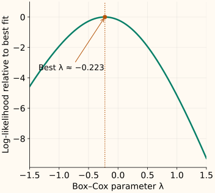

Box-Cox Transform
Suppose a positive-valued feature has a long right tail. A logarithm may compress it too strongly; a square root may not compress it enough. Box–Cox gives us a continuous family of choices, with one shape parameter to fit.
It requires strictly positive inputs. If zero or negative values are meaningful, start with Yeo–Johnson instead of adding an unexplained offset. Neither method guarantees a better predictive model: use the skewness chapter to decide whether changing the feature’s shape addresses a real problem.
One parameter connects familiar transformations
Let $x>0$ be an input, $\lambda$ (“lambda”) the shape parameter, and $z$ the output. Box–Cox defines
The subtraction and division matter. At $\lambda=1$, the result is $x-1$. At $\lambda=1/2$, it is $2(\sqrt{x}-1)$. At $\lambda=-1$, it is $1-1/x$. All pass through $x=1,z=0$ and preserve the order of positive inputs.
| Input x | Box–Cox output |
|---|---|
| 1 | 0.0000 |
| 2 | 1.0000 |
| 4 | 3.0000 |
| 8 | 7.0000 |
| 16 | 15.0000 |
Why a logarithm at zero, and why order is preserved
Write $x^\lambda=\exp(\lambda\log x)$. Near zero, the numerator is approximately $\lambda\log x$; dividing by $\lambda$ approaches $\log x$. The logarithm fills in that limit. This is not the raw power $x^0=1$.
The derivative with respect to the input is $B'_\lambda(x)=x^{\lambda-1}>0$ for every positive $x$, including the log case. The family is strictly increasing even when $\lambda$ is negative.
What does “fit λ” actually optimize?
A common fitting method chooses the parameter with the largest Gaussian profile log-likelihood. Informally, it asks which member of the family gives the best fit under a normal-distribution model, while accounting for the change of scale. It does not simply search for zero sample skewness.
For the training values [1, 2, 3, 5, 12, 40], this criterion selects approximately $\lambda=-0.223$. A different training sample may select another value.

The fitting criterion, with its terms unpacked
For $n$ training values $x_i$, let $z_i=B_\lambda(x_i)$ and let $\bar z$ be their mean. Define $v_\lambda$ as their mean squared distance from that mean:
After fitting the normal model’s mean and variance, the log-likelihood as a function of $\lambda$, up to a constant, is
The first term comes from the fitted normal density. The second corrects for the transformation’s stretching or compression, so candidate densities are compared on the original input scale. Leaving it out would reward numerical shrinkage without that correction. SciPy documents this profile likelihood.
A single shape parameter cannot make every distribution normal. It cannot separate tied observations or remove a point mass, and a nicer histogram is not evidence of better predictions. Keep the transform only if it helps the model under an appropriate validation procedure.
Fitting the power and standardizing are separate steps
Use the transformer inside a preprocessing pipeline so each validation fold fits its own training data. Featurewise fitting does not use the target and does not decorrelate the columns.
Fit once and reuse the result
Here we disable standardization to see the family itself. The two future values are transformed with the training parameter, then recovered with the fitted inverse.
Run the fitted example
import numpy as np
from sklearn.preprocessing import PowerTransformer
train = np.array([[1.], [2.], [3.], [5.], [12.], [40.]])
future = np.array([[4.], [20.]])
transform = PowerTransformer(method="box-cox", standardize=False)
z_train = transform.fit_transform(train)
z_future = transform.transform(future)
print(round(float(transform.lambdas_[0]), 4))
print(z_train.ravel().round(4).tolist())
print(z_future.ravel().round(4).tolist())
np.testing.assert_allclose(transform.inverse_transform(z_future), future)
-0.2231
[0.0, 0.6422, 0.9744, 1.3522, 1.9076, 2.5142]
[1.1924, 2.185]Zeros or negatives violate the Box–Cox input domain, including during future transforms. SciPy’s parameter-fitting routine also rejects constant data: there is no variation from which to estimate shape. If an offset is justified, choose its meaning and fitting rule explicitly; future values must still satisfy the shifted domain.
The inverse has a domain too
Let $z$ now mean the raw Box–Cox output, before any standardization. Solving the forward formula for the original input gives
When $\lambda\ne0$, the base $1+\lambda z$ must be positive. For example, at $\lambda=-1$, valid outputs satisfy $z<1$: a predicted value of 1.2 cannot be inverted to a positive input. This matters if you transform a target and a model predicts outside the transformation’s output range.
inverse_transform also undoes the fitted standardization when enabled. Inverting a transformed prediction still does not automatically recover the original-scale conditional mean; see the log-target example.
C++: apply a known λ without cancellation near zero
The following helpers apply a specified parameter; they do not fit it. expm1 evaluates exp(u) − 1 accurately for small u, and log1p does the same for log(1 + u). Domain and range checks make failed inversions explicit.
Compile the forward and inverse helpers
#include <cmath>
#include <iomanip>
#include <iostream>
#include <stdexcept>
double box_cox(double x, double lambda) {
if (!(x > 0) || !std::isfinite(x) || !std::isfinite(lambda))
throw std::invalid_argument("positive finite x and finite lambda required");
const double z = lambda == 0 ? std::log(x)
: std::expm1(lambda * std::log(x)) / lambda;
if (!std::isfinite(z)) throw std::overflow_error("transform overflow");
return z;
}
double inverse_box_cox(double z, double lambda) {
if (!std::isfinite(z) || !std::isfinite(lambda))
throw std::invalid_argument("finite arguments required");
double exponent = z;
if (lambda != 0) {
const double u = lambda * z;
if (!std::isfinite(u) || !(u > -1))
throw std::domain_error("inverse needs 1 + lambda*z > 0");
exponent = std::log1p(u) / lambda;
}
const double x = std::exp(exponent);
if (!(x > 0) || !std::isfinite(x))
throw std::overflow_error("inverse overflow or underflow");
return x;
}
int main() {
std::cout << std::fixed << std::setprecision(4);
for (double lambda : {0., 0.5, -1.}) {
const double z = box_cox(4., lambda);
std::cout << lambda << ": " << z << " -> "
<< inverse_box_cox(z, lambda) << "\n";
}
}
0.0000: 1.3863 -> 4.0000
0.5000: 2.0000 -> 4.0000
-1.0000: 0.7500 -> 4.0000References and further reading
- SciPy: boxcox — family definition, positive-input requirement, parameter fitting and the original Box–Cox reference.
- SciPy: boxcox_llf — the profile-likelihood criterion used in the chart.
- Scikit-learn: PowerTransformer — featurewise fitting, stored parameters, standardization and inverse transformation.